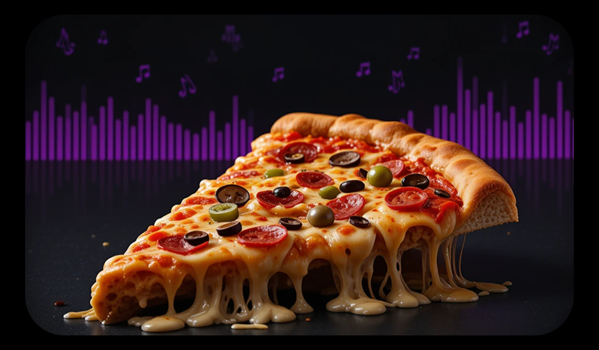
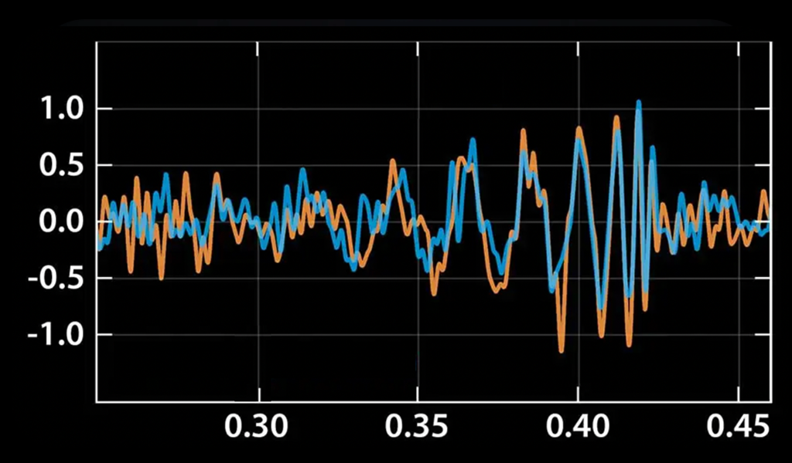
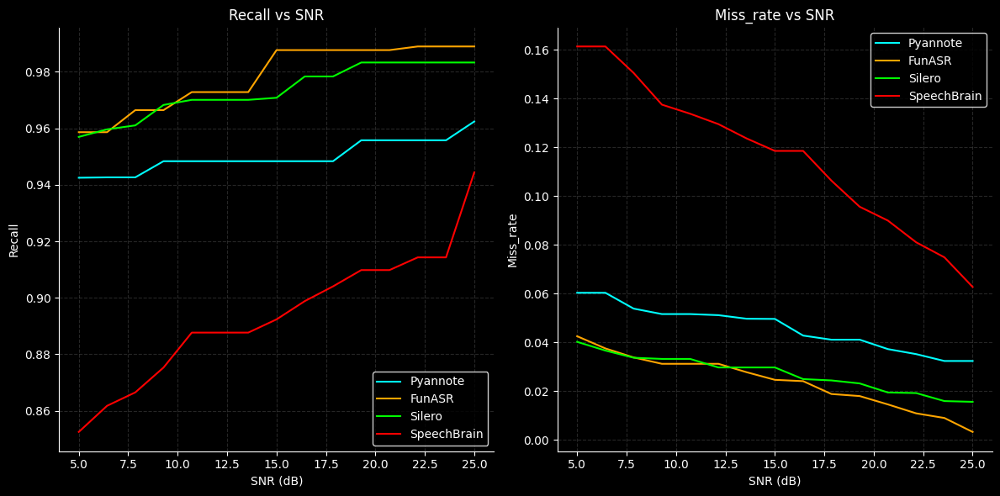

This post explores my recent work on Voice Activity Detection (VAD). Rather than diving into technical stuff, the goal is to explain the concept in an easy way, with a touch of humor to keep it engaging. Let’s get into it!
Imagine you’re at a party, and you’re trying to listen to your friend’s story about their cat. But, oh no! The music is blasting, people are laughing, and someone just dropped a plate. How do you focus on your friend’s voice in all that chaos?
Well, that’s exactly what VAD does, it helps machines figure out when someone is speaking and when they’re not, even in noisy environments.
VAD is like the bouncer at a club, deciding who gets in (speech) and who stays out (noise). It’s a crucial part of speech processing systems, from voice assistants like Siri and Alexa to transcription services and even call centers. But here’s the kicker not all VAD systems are created equal. Some are great at detecting speech, while others… well, let’s just say they need a bit more training.
In my research, I looked at two main ways to evaluate VAD systems: traditional metrics and modern metrics. Think of it like judging a pizza: traditional metrics are like checking if the pizza has the right amount of cheese and toppings, while modern metrics are like tasting it to see if it’s actually delicious.
|

measuring the cheese and toppings, a traditional way. |

consideration of boundaries of speech. (source: newscientist.com) |
Modern Metrics: The Taste Test
Modern metrics are more nuanced. They focus on things like:
The Datasets: Bhojpuri and Vani
To test these VAD systems, I used two datasets: the Bhojpuri dataset (because why not?) and the Vani dataset, which includes audio samples from nine different Indic languages. It’s like testing pizza in different cities, each place has its own unique flavor.
The results? Well, let’s just say some systems were like gourmet chefs, while others were more like college students trying to make ramen.
After running the tests, a few models stood out:
To make things even more interesting, I added uneven noise to the audio samples (because who doesn’t love a challenge?). The goal was to see how well these VAD systems could handle real world noise levels.
Spoiler alert: after a certain point, the systems got better, but there’s only so much noise they can handle before they start to crack, kind of like me trying to focus on a conversation while in sleepy af.
Choosing the right VAD system depends on your specific needs. Different models excel in different scenarios, from simple single-speaker audio to complex multi-speaker environments.
I also compared the VAD systems with an Automatic Speech Recognition (ASR) model. Think of ASR as the ultimate pizza critic, it knows exactly where the speech starts and ends. The comparison revealed some interesting gaps, especially in how the VAD systems handled noise. It’s like realizing your favorite pizza place sometimes forgets to add the pepperoni.
Voice Activity Detection might sound like a dry topic, but it’s actually pretty fascinating when you think about it. It’s all about teaching machines to listen like humans do, filtering out the noise and focusing on what matters. And just like with pizza, there’s no one-size-fits-all solution. It’s all about finding the right balance.
So, the next time you’re talking to Siri or Alexa, remember, there’s a whole world of VAD magic happening behind the scenes. And who knows? Maybe one day, VAD systems will be so good, they’ll even understand my terrible jokes.
Thanks for sticking around! Until next time, keep listening.